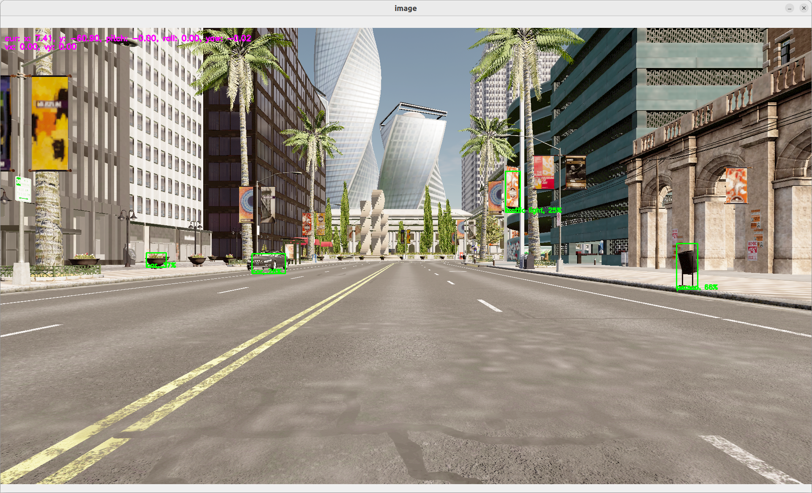

Carla simulator
Let's try to use a car simulator to not only do perception but also control.
Carla Setup
In the rest of the tutorial, we will accept that you have a carla simulator running at localhost:2000 the default carla configuration.
To start a simulator make sure you have carla installed. You can check the installation page if you not sure if it's installed.
You can also a docker version or any other method provided by Carla
In case you have used the installation script. You should be able to run a carla simulator using
./scripts/run_simulator.sh
You can define the VULKAN interface you want to use, using the env variable
VK_ICD_FILENAMES.Ex for NVIDIA:
export VK_ICD_FILENAMES="/usr/share/vulkan/icd.d/nvidia_icd.json"
If you're using the OASIS platflorm, follow the OASIS platform to start and run your dataflow.
Switching from the
We can then switch from the webcam to the simulator in our graph.
# graphs/oasis/oasis_agent_gps.yaml
nodes:
- id: oasis_agent
custom:
inputs:
tick: dora/timer/millis/400
outputs:
- position
- speed
- image
- objective_waypoints
- lidar_pc
- opendrive
source: shell
# With Carla_source_node
args: python3 ../../carla/carla_source_node.py
#
# Or with the OASIS AGENT
#
# args: >
# python3 $SIMULATE --output
# --oasJson --criteriaConfig $CRITERIA
# --openscenario $XOSC
# --agent $TEAM_AGENT
# --agentConfig $TEAM_AGENT_CONF
# --destination $DESTINATION
- id: yolov5
operator:
outputs:
- bbox
inputs:
image: oasis_agent/image
python: ../../operators/yolov5_op.py
env:
# CUDA_VISIBLE_DEVICES: ""
# PYTORCH_DEVICE: cuda # Uncomment if you want to use CUDA
# YOLOV5_PATH: # /PATH/TO/YOLOv5 Ex: $DORA_DEP_HOME/dependencies/yolov5
# YOLOV5_WEIGHT_PATH: : # /PATH/TO/YOLOv5 Ex: $ORA_DEP_HOME/dependencies/yolov5/yolov5n.pt
- id: plot
operator:
python: ../../operators/plot.py
inputs:
image: oasis_agent/image
obstacles_bbox: yolov5/bbox
position: oasis_agent/position
To run:
dora up
dora start graphs/oasis/oasis_agent_yolov5.yaml --attach
You should see a window showing the view from a camera within the carla simulator. On this camera stream, you should see object detection happenning.
You can ctrl+c to kill your running dataflow.

This very first step is done to show you how to connect carla simulator with dora. It does not provide any control to move the car.